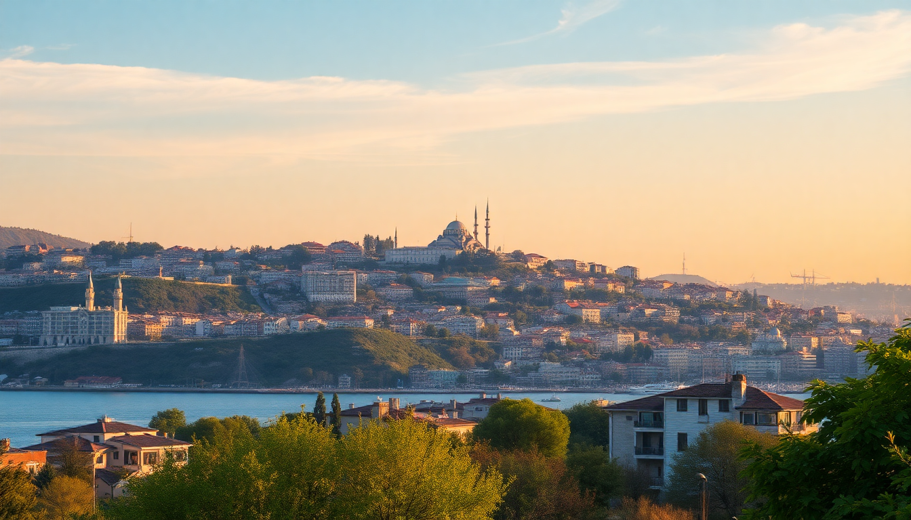

Best Cities to Visit in Turkey: Istanbul, Ankara, Izmir, Antalya

I spent six weeks bouncing between Istanbul, Ankara, Izmir, and Antalya last spring. Each city feels like a different country. Istanbul is a sensory overload of history and traffic. Ankara is quieter, more bureaucratic, but has a real pulse if you know where to look. Izmir is the Aegean’s laid-back secret. Antalya is a beach resort that still has old bones. Here’s what I learned, neighborhood by neighborhood.
Why visit Istanbul over the other three cities?
Istanbul is the obvious first stop, and for good reason. It’s the only city on this list where you get both Europe and Asia in a single ferry ride. But it’s also the most exhausting. The crowds at Sultanahmet are relentless, and the taxi drivers will try to charge you triple if you don’t use the app. That said, the food scene alone justifies the trip.
- Sultanahmet: Hagia Sophia and the Blue Mosque are back-to-back. Go at 7:30 AM to avoid the tour buses.
- Karaköy: Best neighborhood for modern restaurants and coffee shops. We ate at Mikla for rooftop views and Karaköy Lokantası for home-style Turkish food.
- Kadıköy: On the Asian side. The fish market here is better than any tourist spot in Eminönü. Take the ferry from Eminönü — it’s 25 minutes and costs less than a dollar.
- Üsküdar: Quiet waterfront district with great tea gardens. Çınaraltı park is where locals sit for hours.
We stayed at Hotel Amira in Sultanahmet. Small, clean, and the staff actually helped us book a ferry to the Princes’ Islands without a markup. Skip the Grand Bazaar unless you want to haggle for an hour over a fake scarf. Instead, wander the Spice Bazaar for real dried apricots and Turkish delight.
Is Ankara worth more than a layover?
Most people skip Ankara. I almost did. But I’m glad I spent three days there. It’s the capital, so it’s cleaner and less chaotic than Istanbul. The traffic is still bad, but the city feels more manageable. The real draw is the Museum of Anatolian Civilizations — it’s one of the best archaeology museums I’ve ever seen, with artifacts from Çatalhöyük and Hittite sites.
- Kızılay: The central square. Busy, commercial, but a good base for public transport. Stay at Bahçelievler neighborhood instead — quieter, more cafes.
- Hamamönü: Restored Ottoman houses with artisan shops. We had lunch at Zenger Paşa Konağı, a historic mansion serving Ankara-style keşkek (slow-cooked wheat and meat).
- Anıtkabir: Atatürk’s mausoleum. It’s massive, solemn, and free. The museum underneath is surprisingly well-curated.
- Tunalı Hilmi Caddesi: Best street for evening walks and casual restaurants. Pide House does a mean lahmacun for 30 lira.
Ankara’s food is underrated. Try Ankara tava (lamb and rice casserole) at Köşk Sofrası. The city is also a good place to buy authentic copperware without the tourist markup. I picked up a small cezve (coffee pot) for a third of what I’d pay in Istanbul.
What makes Izmir different from the other Turkish cities?
Izmir is the most relaxed of the four. It’s on the Aegean coast, so the vibe is more Greek than Turkish in some ways. The city was rebuilt after a fire in 1922, so you won’t find Ottoman palaces here. What you get is wide boulevards, a long seaside promenade (Kordon), and incredible seafood. It’s also the gateway to Ephesus and Şirince village.
- Alsancak: The heart of the city. Cobblestone streets, bars, and art galleries. We stayed at Swissôtel Büyük Efes — old-school luxury with a pool overlooking the bay.
- Kordon: Walk the 3-kilometer promenade at sunset. Stop at Deniz Restaurant for grilled sea bass and rakı.
- Kemeraltı Market: A covered bazaar that feels authentic, not touristy. Buy dried figs and olive oil soap here. Haggle is expected but polite.
- Ephesus: 45 minutes south by minibus. Go early to beat the cruise ship crowds. The Library of Celsus is stunning, but the terrace houses (extra ticket) are the real highlight.
Izmir’s breakfast culture is a thing. Kahvaltıcı shops serve 20-item spreads with cheeses, olives, honey, and menemen (scrambled eggs with tomatoes). Try Güzel İzmir in Alsancak. The city also has a strong coffee scene — Kızlarağası Hanı in the market has a courtyard cafe that locals use as a second office.
When is the best time to visit Antalya?
Antalya is a beach city, so timing matters. I went in early May and it was perfect — warm enough to swim (22°C water), but not crowded. July and August are brutal: 40°C heat, Russian tourists everywhere, and prices double. The old town, Kaleiçi, is worth a day even if you’re here for the coast.
- Kaleiçi: The walled old town with narrow lanes, boutique hotels, and Roman ruins. Stay at Tuvana Hotel — a converted Ottoman mansion with a courtyard pool.
- Hadrian’s Gate: Free to walk through. It’s right at the entrance to Kaleiçi.
- Lara Beach: Sandy, long, and full of all-inclusive resorts. Not my vibe, but families love it.
- Konyaaltı Beach: Pebbly but cleaner. The beach clubs here (like Moonlight Beach) rent sunbeds for 50 lira with a drink included.
- Düden Waterfalls: 20 minutes from the city center. The lower falls drop straight into the sea. Go in the morning to avoid selfie sticks.
Antalya’s food scene leans heavy on grilled meats and fresh produce. 7 Mehmet in Kaleiçi does a mean Adana kebab. For something lighter, try piyaz — a white bean salad with tahini dressing. The marina area is overpriced and touristy. Skip it and eat in the backstreets of Kaleiçi instead.
How do you get between these cities?
Turkey’s intercity bus network is excellent and cheap. I used Kamil Koç and Pamukkale for most legs. Istanbul to Ankara is 5 hours by bus or 4.5 by train (YHT high-speed). Ankara to Izmir is 8 hours by bus — take the overnight one to save a day. Izmir to Antalya is 6 hours by bus through scenic mountain roads. Flights are also affordable: Turkish Airlines and Pegasus have frequent hops under $50 one-way.
- Istanbul to Ankara: YHT train from Pendik station. Book online at TCDD’s site. First-class is worth the extra $5.
- Ankara to Izmir: Bus is the only practical option unless you fly. Metro Turizm has Wi-Fi and snacks.
- Izmir to Antalya: The bus goes through Selçuk and Aydın. Stop at Şirince for lunch — it’s a hill village known for fruit wines.
- Antalya to Istanbul: Flight is best. 1 hour 15 minutes vs 10 hours by bus.
I rented a car for the Izmir–Antalya leg and it was a mistake. The D400 coastal road is beautiful, but Turkish drivers are aggressive and tolls are confusing. Stick to buses or flights.
FAQ
Is it safe to travel solo in Turkey as a woman? I traveled solo (female) for the entire six weeks and never felt unsafe. The biggest issue was persistent street vendors in Istanbul and occasional catcalling in Izmir. Stay in well-lit areas at night, use official taxis from apps like BiTaksi, and dress modestly when visiting mosques. The locals are generally helpful and curious, not threatening.
How much cash should I carry? Turkey has high inflation, so card acceptance is widespread in cities. In Istanbul, Ankara, and Izmir, I used my credit card for everything over 100 lira. In Antalya’s old town and small shops, cash is king. ATMs are everywhere, but avoid exchange booths in tourist areas — they skim 10-15% on bad rates. Withdraw from a bank ATM (Garanti or İşbank) for the best rate.
Can I visit all four cities in 10 days? Technically yes, but you’ll be exhausted. I’d recommend 10 days for just Istanbul and Izmir (with a day trip to Ephesus). If you insist on all four, do Istanbul (3 days), fly to Ankara (1.5 days), bus to Izmir (2 days), then bus to Antalya (2 days). Skip the overnight buses if you can afford flights. The train between Istanbul and Ankara is the only comfortable long-distance option.
Conclusion
- Istanbul is the must-see for history and food, but budget extra time for the crowds.
- Ankara is a sleeper hit for museum lovers and anyone tired of tourist traps.
- Izmir is the best base for exploring the Aegean coast and eating well without the hype.
- Antalya delivers on beaches and Roman ruins, but go in shoulder season (April–May or September–October).
- Getting around is easy with buses and flights, but book YHT train tickets for Istanbul–Ankara in advance.